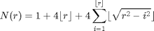

SAMPLEDISK_BASE - Base function for SAMPLEDISK.
Contents
Syntax
[x, y, w] = SAMPLEDISK_BASE(center, radius, method, samp);
Reference
See discussions at http://mathworld.wolfram.com/DiskPointPicking.html http://mathworld.wolfram.com/GausssCircleProblem.html
See also
Ressembles: SAMPLEDISK, SAMPLETRIANGLE_BASE, BRESENHAMLINE_BASE. Requires: POL2CART, CUMSUM, STREL, MESHGRID.
Function implementation
%-------------------------------------------------------------------------- function [x, y, w] = sampledisk_base(center, radius, method, samp) %error(nargchk(4, 5, nargin, 'struct')); %error(nargoutchk(2, 3, nargout, 'struct')); % set default if nargout<=3, w = []; end if any(strcmpi(method,{'full','grid','scale'})) radius = round(radius); end % % avoid duplicate entries calculations % [radius, dum, J] = unique(radius); % the sampling also depends on the variable samp, so unvalid approach switch method case 'full' % sampling of all discrete points inside the circle [x, y, nsamp] = fullsampledisk(radius); case 'scale' % sampling of all discrete points inside the circle with % multiscale weight assignation [x, y, nsamp, w] = radisampledisk(radius); case 'grid' % regular grid sampling if samp>=0 && samp<1, n = floor(samp .* gausscircle(radius)); samp = floor(4*radius/sqrt(n)); % our approximation end [x,y,nsamp] = gridsampledisk(radius, abs(samp)); case 'radi' % radial sampling [x,y,nsamp] = radisampledisk1(radius, samp); case 'rand' % random sampling if all(samp(:)>=0) && all(samp(:)<1), samp = floor(samp .* gausscircle(radius)); end [x,y,nsamp] = randsampledisk(radius, abs(samp)); otherwise error('sampledisk_base:methoderror',['unknown method ' method]); end % % reset original ordering and set possible duplicate entries % x = x(J,:); % y = y(J,:); % for i=1:length(x) % x{i} = round(x{i} + repmat(center(i,1),[length(x{i}) 1])); % y{i} = round(y{i} + repmat(center(i,2),[length(y{i}) 1])); % end x = round(x + repmat(center(:,1),[1 nsamp])); % rounds toward 0 y = round(y + repmat(center(:,2),[1 nsamp])); % note that NaN number will still be NaN number after this operation. if isempty(w), w = ones(size(x)); end end % end of sampledisk_base
Subfunctions
RADISAMPLEDISK - Sample on radial circles inside the disk
%-------------------------------------------------------------------------- function [x, y, nsamp, w] = radisampledisk(radius) ndisks = length(radius); % note: technique suggested in [DPG10] % generate an adaptive grid around each center pixel so that samples are % selected with increasing sparsity as the distance to the center (within % the limit given by the radius) increases. % reduce the grid resolution by two and compute on the coarser grid; repeat % this process and continuously coarsen the grid; values from the fine grid % are reused for the coarser grid so that there is no computational overhead. % sampling rule % the rate of sampling is fixed to 1/2 over all radial circles except for % the first two circles with radius 1 and 2samp = repmat(0.5,[ndisks,1]); % irad: 1 2 3 4 5 6 % radius: 1 2 4 8 16 32 % 2^(i-1) ... % no. pts: 4 8 8 16 32 64 % 2^(i+1) 2^(i+1) 2^i ... % tot. no. pts: 5 13 21 37 69 133 % (csamp) rad = floor(log2(radius))+1; rad(isinf(rad)) = 0; R = max(radius); Rad = floor(log2(R)); % list of considered radii rsamp = 2.^(0:Rad); % number of sample for each radius nrsamp = 2*rsamp; if Rad>=1, nrsamp(1) = 4; if Rad>=2, nrsamp(2) = 8; end end % cumulated number of samples ncsamp = [0 cumsum(nrsamp,2)]+1; % maximal number of samples nsamp = ncsamp(end); % 1 stand for the added center of the circle x = NaN(ndisks,nsamp); y = NaN(ndisks,nsamp); if nargout==4, w = zeros(ndisks,nsamp); else w = []; end for i=1:Rad+1 % Rad+1 is length(rsamp) s = rand() * pi; % random pixel chosen chosen as the first sampling point theta = linspace(s,2*pi+s,nrsamp(i)); rho = rsamp(i) * ones(1,nrsamp(i)); [a,b] = pol2cart(theta, rho); I = rad>=i+1; nI = sum(I); x(I,ncsamp(i)+1:ncsamp(i+1)) = repmat(a,[nI,1]); y(I,ncsamp(i)+1:ncsamp(i+1)) = repmat(b,[nI,1]); if ~isempty(w) % multiscale weight factor w(I,ncsamp(i)+1:ncsamp(i+1)) = repmat(1/rsamp(i), [nI, nrsamp(i)]); end end % replace the first entry by the offset of the central point x(:,1) = 0; y(:,1) = 0; if ~isempty(w), w(:,1) = 1; end end
FULLSAMPLEDISK - Sample all lattice points inside a disk.
%-------------------------------------------------------------------------- function [x, y, nsamp, w] = fullsampledisk(radius) % initialize ndisks = length(radius); R = max(radius); nsamp = sum(sum(getnhood(strel('disk',R,0)))); if R>30 warning('sampledisk:warningdata', ... ['large circles (max detected R=' num2str(R) ') imply too many ' ... 'samples with method ''full'' and risk ''Out of Memory'' usage']); end x = NaN(nsamp,ndisks); y = NaN(nsamp,ndisks); % x = cell(ndisks,1); % y = cell(ndisks,1); if nargout==4, w = zeros(nsamp,ndisks); % r = cell(ndisks,1); else w = []; end for i=1:ndisks offsets = getneighbors(strel('disk',radius(i),0)); % when N equals 0, no approximation is used, and the structuring element % members consist of all pixels whose centers are no greater than R away % from the origin. k = size(offsets,1); x(1:k,i) = offsets(:,1); y(1:k,i) = offsets(:,2); % x{i} = offsets(:,1); % y{i} = offsets(:,2); if ~isempty(w) % multiscale weight factor % w(1:k,i) = 1 ./ floor(sqrt(offsets(:,1).^2 + offsets(:,2).^2)); w(1:k,i) = 1 ./ sqrt(offsets(:,1).^2 + offsets(:,2).^2); % w{i} = 1 ./ sqrt(offsets(:,1).^2 + offsets(:,2).^2); % w{i}(isinf(r{i})) = 1; end end x = x'; y = y'; if ~isempty(w), w(isinf(w)) = 1; w = w'; end end
RANDSAMPLEDISK - Randomly sample inside a disk.
See http://mathworld.wolfram.com/DiskPointPicking.html
%-------------------------------------------------------------------------- function [x, y, nsamp] = randsampledisk(radius, samp) ndisks = length(radius); nsamp = max(samp); if numel(samp)==1 % probability density function (PDF) pdf_r(r)=(2/R^2) * r; % and cumulative PDF is F_r = (2/R^2)* (r^2)/2 % inverse cumulative PDF is r = R*sqrt(F_r) % so we generate the correct r as rho = repmat(radius, [1 nsamp]) .* sqrt(rand(ndisks,nsamp)); theta = 2 * pi * rand(ndisks,nsamp); % convert to cartesian [x,y] = pol2cart(theta, rho); else %if all(0<=samp && samp<1) x = NaN(ndisks,nsamp); y = NaN(ndisks,nsamp); for i=1:ndisks rho = repmat(radius(i), [1 samp(i)]) .* sqrt(rand(1,samp(i))); theta = 2 * pi * rand(1,samp(i)); [x(i,1:samp(i)), y(i,1:samp(i))] = pol2cart(theta, rho); end end % at that point, samples are not unique end
GRIDSAMPLEDISK - Sample inside the disk on a regular lattice grid.
%-------------------------------------------------------------------------- function [x, y, nsamp] = gridsampledisk(radius, samp) % initialize ndisks = length(radius); if numel(samp)==1 % samp may be a scalar or a vector samp = repmat(samp,[ndisks,1]); end [~,i] = max(radius./ samp); se = getnhood(strel('disk',radius(i),0)); % we look at the worse case nsamp = sum(sum(se(1:samp(i):end,1:samp(i):end)))+1; % note that we add 1 for the case the center of the circle (which is % automatically added to sampling grid) is not already included in the % grid x = NaN(nsamp,ndisks); y = NaN(nsamp,ndisks); for i=1:ndisks se = getnhood(strel('disk',radius(i),0)); grid = false(size(se)); grid(1:samp(i):end,1:samp(i):end) = true; grid = grid & se; grid(radius(i)+1,radius(i)+1) = true; [m,n] = find(grid); k = size(m,1); x(1:k,i) = m - (radius(i)+1); y(1:k,i) = n - (radius(i)+1); end x = x'; y = y'; end
RADISAMPLEDISK1 - Sample on a single circle (at a distance radius from the disk's center)
%-------------------------------------------------------------------------- function [x, y, nsamp] = radisampledisk1(radius, samp) ndisks = length(radius); if numel(samp)==1 % samp may be a scalar or a vector samp = repmat(samp,[ndisks,1]); end r = radius; I = samp>=1; r(I) = min(radius(I), ceil(samp(I)/8)); I = samp<-1; r(I) = ceil(radius(I)/2); samp(I) = abs(samp(I)); I = samp>0 & samp<=1; r(I) = ceil(samp(I) .* radius(I)); samp(I) = 8 * r(I); samp((I) & radius==1) = 4; nsamp = max(samp); theta = NaN(ndisks,nsamp); for i=1:ndisks theta(i,1:samp(i)) = linspace(0,2*pi,samp(i)); end rho = r(:) * ones(1,nsamp); [x,y] = pol2cart(theta, rho); % replace the last (repeated) entry by the offset of the central point x(:,end) = 0; y(:,end) = 0; end
GAUSSCIRCLE - Count the number of lattice points N inside the boundaries of a circle with radius r

From http://mathworld.wolfram.com/GausssCircleProblem.html
See also http://mathworld.wolfram.com/CircleLatticePoints.html
%-------------------------------------------------------------------------- function N = gausscircle(r) nr = size(r,1); fr = floor(r); frmax = max(fr); R = repmat(r,[1 frmax]); FR = meshgrid(1:frmax,1:nr); FR = cumsum(floor(sqrt(R.^2 - FR.^2)),2); N = 1 + 4*fr + 4*FR((fr-1)*nr+(1:nr)'); end